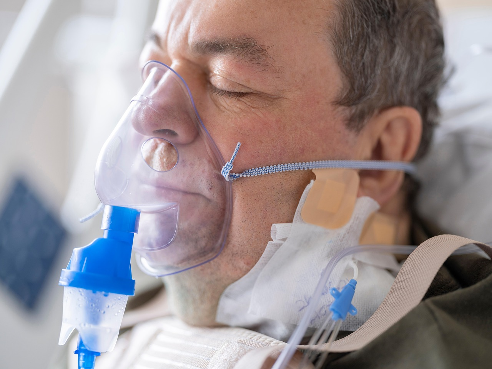
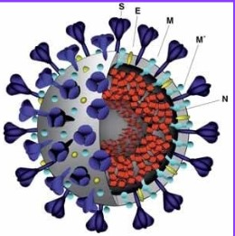
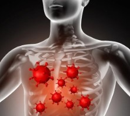
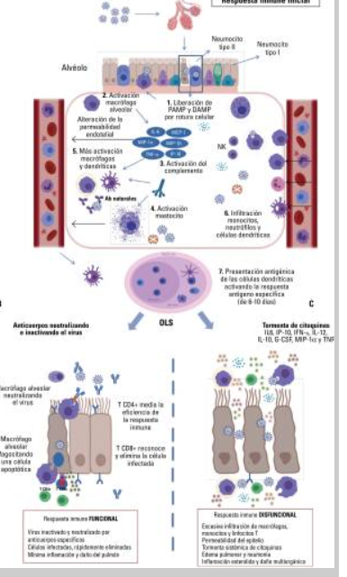
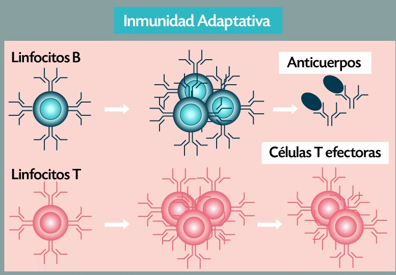
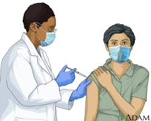
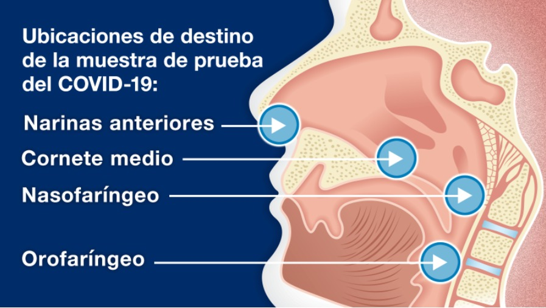
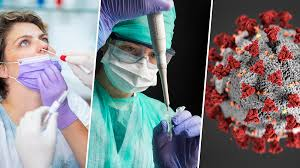

COVID-19 es una enfemedad infecciosa causada por el virus SARS-CoV-2, un tipo de coronavirus
que fue identificado por primera vez en diciembre de 2019 en la ciudad de Wuhan, China.
El nombre COVID-19 proviene de las palabras "COrona", "VIrus","DIsease" (enfermedad) y el
año de su aparicion, 2019.
Según artículos cientificos y fuentes confiables como la Organización Mundial de la Salud (OMS)
y los Centros para el Control y la Prevención de Enfermedades el COVID-19 se transmite
principalmente a través de gotículas respiratorias (CDC), cuando una persona infectada tose,
estornuda o habla. Tambien puede propagarse al tocar superficies contaminadas y luego llevarse
las manos a la cara.
¿Cuales son los sintomas?
FIEBRE
CANSANCIO
TOS SECA
PERDIDA DE GUSTO Y OLFATO
DIFICULTAD PARA RESPIRAR

En algunos casos, la enfermedad puede ser grave.
Causar complicaciones como neumonia.
Insuficiencia respiratoria.
En casos extremos, la muerte, especialmente en personas mayores.
Enfermedades subyacentes.
SABIAS QUE LOS QUIMICOS FUERON DE GRAN AYUDA EN LA PANDEMIA DEL COVID-19
Los químicos desempeñaron un papel fundamental durante la pandemia de COVID-19.
Su trabajo fue clave en diversas áreas, como desarrollo de vacunas y tratamientos, producción
de desinfectantes y equipos de protección, pruebas de diagnóstico, impacto ambiental y
análisis de propagación.
Las vacunas ayudan a reducir la infección, hospitalización
y riesgo de muerte.
BIOQUIMICA
¿Qué es la bioquimica?
La bioquímica es una rama de la ciencia que combina principios de la biología y la química para
estudiar los procesos químicos que ocurren en los seres vivos. Se enfoca en entender la
estructura, función y transformaciones de las moléculas que componen los organismos, asi como
las reacciones químicas que permiten la vida.
Estudia la composicion y organización de moléculas esenciales para la vida, como:
Proteínas: Enzimas, hormonas, anticuerpos.
Carbohidratos: Azucares y polisacáridos como el almidon y la celulosa.
Lípidos: Grasa, aceites y membranas celulares.
Ácidos nucleicos: ADN y ARN, responsables de la informacion genética.
La bioquímica es fundamental en la compresión y tratamiento de la enfermedad COVID-19.
Detallan los aspectos bioquímicos más relevantes con el SARS-CoV-2 (el virus que causa COVID-19)
Estructura del corona virus
Proteína estructural
Función de la proteína
Proteína de la nucleocápsida (N)
Enlazarse al ARN viral para formar la nucleocápsida
Proteína del Spike "espiga" (S)
Vital para enlazar a los receptores en la membrana de
la célula hospedera para lograr entrar a la célula
Proteína de la Cubierta "envelope" (E)
Interacciona con la proteína M para formar la cubierta viral
Proteína de la membrana (M)
Responsable de organizar el ensamblaje viral
ESTRUCTURA VIRAL
El virus del SARS-CoV-2 es relativamente grande en comparación con otros virus. Tiene un diámetro de aproximadamente
60-140 nanómetros, con una forma esférica o ligeramente ovalada. La proteína Spike (S) le da al virus una apariencia
característica con "picos" visibles cuando se observa bajo un microscopio electrónico.
Envoltura lipídica derivada de la célula huésped.
Proteínas estructurales en la envoltura: Spike (S), Membrana (M), Envoltura (E) y Nucleocápside.
Genoma de ARN de cadena sencilla y positiva, de aproximadamente 30,000 nucleótidos.
Cápside formada por proteínas N que protegen el ARN viral.

Entrada del virus a las células

La proteína S del SARS-CoV-2 se une al receptor ACE2 (enzima convertidora de angiotensina 2) en la superficie de las
células humanas, especialmente en células epiteliales de los pulmones, corazón, riñones e intestinos. La unión de
la proteína S al receptor ACE2 activa la proteasa celular TMPRSS2 (serina proteasa transmembrana), que escinde la
proteína S, permitiendo la fusión de la membrana viral con la membrana celular. Esto facilita la liberación del ARN
viral en el citoplasma de la célula huésped.
Replicación del ARN viral
Una vez dentro de la célula, el ARN viral es traducido por los ribosomas celulares para producir las poliproteínas
virales, que son procesadas por proteasas virales (como la proteasa principal Mpro o 3CLpro) en proteínas
funcionales. El virus utiliza una ARN polimerasa dependiente de ARN (RdRp) para replicar su genoma y producir nuevos
ARN virales. Este proceso ocurre en compartimientos membranosos derivados del retículo endoplasmático, conocidos como
vesículas de doble membrana.
Artículos Científicos sobre COVID-19
Las revisiones sistemáticas son artículos que recopilan y sintetizan una gran cantidad de estudios, haciendo que la
información sea más digerible y accesible. Estas revisiones suelen estar bien estructuradas, explicando los conceptos
clave de manera simplificada.
La inmunología es la rama de la biología y la medicina que estudia el sistema inmunitario, es decir, el conjunto de
estructuras, células y mecanismos que protegen al organismo de agentes infecciosos (como bacterias, virus, hongos y
parasitos), así como de otras amenazas (como células cancerosas o tejidos extraños). Su objetivo es entender cómo el
cuerpo reconoce, responde y elimina estos agentes invasores, así como mantiene un equilibrio para no atacar sus propios
tejidos (lo que podría provocar enfermedades autoinmunes).
Funciones Principales del Sistema Inmunologíco
Sistema Inmunologíco
Inmunidad innata
Inmunidad adaptativa
Inmunidad activa y pasiva
Trastornos inmunologícos
El proceso inmunitariofrente al COVID-19 (causado por el virus SARS-CoV-2) es complejo y consta de varias etapas que
involucran tanto al sistema inmunitario innato como al adaptativo.
Entrada del virus
El SARS-CoV-2 entra al cuerpo principalmente a través de las vías respiratorias (nariz, boca, garganta) cuando una persona
infectada tose, estornuda o habla. El virus se une a las células epiteliales del tacto respiratorio, utilizando una proteina
llamada espícula (S) que se conecta con un receptor en la superficie de las células humanas llamado ACE2 (enzima
convertidora de angiotensina 2). Una vez que el virus se une al receptor ACE2, entra dentro de las células del cuerpo y
comienza a replicarse, lo que puede causar daño celular y activar el sistema inmunologíco.
Inmunidad Innata
La respuesta inmunitaria innata representa la primera línea de defensa contra el SARS-CoV-2 y es esencial para la contención viral
y el desarrollo de la hiperinflamación asociada a los síntomas más graves. Entre las moléculas clave de la inmunidad innata se
encuentran las citocinas, con los interferones (IFN) de tipo I (IFN-α, IFN-β IFN-ω) como ejemplo principal. Estos IFN de tipo I se
producen en las células infectadas y son un mecanismo de inmunidad intrínseco. El IFN-α y el IFN-ω parecen desempeñar un papel
central en el control de la infección. A nivel celular, las células NK son importantes ya que pueden eliminar las células infectadas
por el virus. Existe el concepto de inmunidad entrenada, asociado a la inmunidad innata, donde el sistema innato puede mejorar su
respuesta con contactos previos. La epigenética está implicada en este proceso, lo que podría explicar algunas respuestas efectivas
a la infección y los casos asintomáticos.

Inmunidad Adaptativa
Dado que el SARS-CoV-2 es un virus intracelular, la citotoxicidad, o la muerte de la célula infectada, es crucial para su eliminacion.
La inmunidad adaptativa específica contribuye a esta eliminación viral a través de los linfocitos T citotóxicos como principal elemento
efector. La respuesta de los linfocitos T también coordina la respuesta humoral, permitiendo que los linfocitos B desarrollen y mejoren
los anticuerpos específicos contra las proteínas de la superficie viral. Los anticuerpos neutralizantes pueden bloquear la interacción
del virus con el receptor celular, impidiendo la entrada a nuevas células y evitando la difusión viral. Las pruebas serológicas detectan
la inmunidad humoral, pero un resultado positivo de IgM no siempre indica una infección aguda, ya que puede persistir meses.
La presencia IgM indica que la respuesta inmunitaria ha seguido su curso, pero no necesariamente que la infección haya pasado.
Los anticuerpos por sí solos no eliminan la infección establecida, sino que bloquean la propagación y eliminan virus en los espacios
extracelulares. Los linfocitos T son los que realmente pueden eliminar una infección establecida.

Memoria Inmunologíca
La generación de memoria inmunologíca induce protección frente a una segunda infección. Esto se observa tanto en la inmunización por infección
natural como las vacunas y es inherente a la respuesta inmunitaria adaptativa, junto con los anticuerpos, participan los linfocitos B de memoria
y los linfocitos T CD4+ y CD8+ de memoria. La memoria inmunitaria depende de los linfocitos T y puede existir incluso sin anticuerpos o
linfocitos B5. De hecho, la respuesta celular T se detecta en casi todos los pacientes que se recuperan de la COVID-19, incluso cuando no se
detectan anticuerpos, la respuesta de células T puede aparecer antes que la respuesta de anticuerpos.
Inmunizacion Vacunación
La inmunización posvacunal desarrolla protección por un mecanismo equivalente al de la infección natural, donde la respuesta linfocitaria T
es fundamental, aunque la evaluación de la protección se centra a menudo en los anticuerpos debido a su facilidad de medicion, los linfocitos
T son los que realmente eliminan el virus y protegen contra reinfecciones. La medición de anticuerpos se considera un marcador indirecto de
esta respuesta protectora de los linfoncitos T. Estudios han demostrado que invcluso en personas sin respuesta de anticuerpos a la vacuna, puede
haber inmunidad celular especifica frente al SARS-CoV-2, lo que indica que deben considerarse inmunizadas. La vacunación en personas que ya
pasaron la infección genera una inmunidad híbrida, que combina la inmunidadnatural con la inducida por la vacuna, resultando en una mejor
respuesta de anticuerpos y una protección cruzada más amplia contra las variantes virales.

Artículos Científicos
Las revisiones sistemáticas son artículos que recopilan y sintetizan una gran cantidad de estudios, haciendo que la
información sea más digerible y accesible. Estas revisiones suelen estar bien estructuradas, explicando los conceptos
clave de manera simplificada.
El analísis clínico es una disciplina de la medicina que se enfoca en el estudio y la evaluacion de muestras biológicas
(como sangre, orina, heces, liquidos corporale, entre otras) con el fin de obtener información sobre el estado de salud
de una persona. Los analísis clínicos son fundamentales para el diagnostico, seguimiento y prevención de enfermedades.
Estudia los analísis
Analísis de sangre.
Analísis de orina.
Analísis de heces.
Pruebas microbiológicas.
Pruebas hormonales.
Pruebas de coagulación.
Analísis genéticos.
El analísis clínico en el proceso de la COVID-19 juega un papel fundamental en el diagnostico, seguimiento y manejo de los
pacientes afectados por el SARS-CoV-2. A medida que la pandemia avanzaba, se han desarrollado múltiples estrategias y metodos
para evaluar a los pacientes desde una perspectiva clínica, inmunologíca y molecular.
Pruebas Diagnósticas
Las muestras de hisopos utilizan un hisopo (similar a un hisopo largo) para recolectar una muestra de la nariz o la garganta.
Los tipos de muestras incluyen:
Narinas anteriores (nasales) - toma una muestra del interior de las fosas nasales.
Turbina media - toma una muestra de la parte superior de la nariz.
Nasofaríngea - toma una muestra del interior de la nariz hasta la parte posterior de
la garganta y sólo debe ser recolectada por un profesional de la salud capacitado.
Orofaríngea - toma una muestra de la parte media de la garganta (faringe) un poco más
adentro de la boca, y sólo debe ser recolectada por un profesional de la salud capacitado.
Las muestras de saliva se recolectan escupiendo en un tubo, en lugar de usar hisopo de nariz o garganta.

PCR "Reacción en Cadena de la Polimerasa"

Técnica donde se extrae una muestra de material genético (ARN) del virus SARS-CoV-2, generalmente de un hisopado nasofaríngeo.
La PCR amplifica (multiplica) selectivamente el ARN viral, permitiendo detectar incluso cantidades muy pequeñas del virus.
Se utilizan enzimas (polimerasas) y cebadores específicos para el SARS-CoV-2.
La detección se realiza mediante fluorescencia, indicando la presencia del material genético viral.
Toma de la Muestra
Tipo de muestra:
Hisopado nasofaríngeo y/o oronfarígeo (el mas común).
Tambien puede usarse saliva o aspirado bronquial en casos específicos.
Material necesario:
Hisopo estéril.
Tubo de transporte como medio de conservación (ej.VTM: Viral Transport Medium).
Procedimiento:
Se introduce el hisopo en la nariz (nasofaringe) o garganta (orofaringe) para
recolectar células y secreciones.
La muestra se coloca en el tubo con medio de transporte y se etiqueta correctamente.
Transporte:
La muestra debe mantenerse a 2-8°C y llegar al laboratorio en plazo máximo de 72 horas.
Si el procesamiento se retrasa, se puede almacenar a -70°C.
Procedimiento laboratorio:
Extracción del ARN viral
Se utiliza un kit de extracción de ARN para aislar el material genético del virus (SARS-CoV-2).
pasos:
Inativación viral:
La muestra se trata con reactivos que desactivan el virus (ej. buffer de lisis).
Purificacion del ARN:
Mediante columnas de extracción o métodos automatizados (ej. sistemas magnéticos).
Amplificación por PCR
Se usa un termociclador y reactivos de PCR en tiempo real (RT-qPCR).
Reactivos clave:
Enzima transcriptana inversa: Convierte el ARN viral en ADN complementario (ADNc).
Cebadores (primers) y sondas: Específicos para genes del SARS-CoV-2 (ej. gen N, E o RdRP).
Nucleótidos y ADN polimerasa: Para aplicar el ADN.
Ciclos de amplificación:
El termociclador calienta y enfria la muestra para replicar el material genético.
Las sondas fluorescentes marcan la presencia del virus.
Analisis de Resultados
Umbral de ciclo (Ct):
Número de ciclos necesarios para detectar la señal fluorescente.
Un Ct bajo (<35) indica alta carga viral.
Un Ct alto (≥ 35-40) puede sugerir baja carga viral o falsos positivos.
Interpretacion:
Positivo: Se detectan los genes diana del SARS-CoV-2.
Negativo: No se detecta ARN viral (puede ser falso negativo si la muestra es inadecuada).
Inconcluso: Se requiere repetir la prueba.
Medidas de Bioseguridad
El laboratorio debe tener nivel de bioseguridad BSL-2 o superior.
Uso de EPI: Batas, guantes, mascarillas (N95/KN95) y protección ocular.
Descontaminación de superficies con hipoclorito de sodio o etanol al 70%.
Tiempo de Entrega
Los resultados suelen estar listos en 24-48 horas, dependiendo de la carga de trabajo del laboratorio.
Pruebas de Antígenos
Técnica
Se recolecta una muestra de hisopado nasal o nasofaríngeo. Se utilizan anticuerpos específicos que se unen a proteinas del
virus (antígenos). La unión antígeno-anticuerpo genera una señal visible, indicando la presencia del virus. Existen diversos
formatos, desde pruebas rápidas de flujo lateral, hasta ensayos de inmunoquimioluminiscencia.
procedimientos de la muestra
Pruebas de Anticuerpos (Serológicas):
Técnica
Se obtiene una muestra de sangre del paciente, se busca la presencia de anticuerpos IgM e IgM, que el cuerpo produce en respuesta
a la infeccion. Se utilizan técnicas como ELISA (ensayo inmunoenzimático ligado a enzimas) o CLIA (inmunoensayo quimioluminiscente),
para detectar y cuantificar los anticuerpos. Estas pruebas no detectan el virus directamente, sino la respuesta inmune del paciente.
Evaluación de la Gravedad y el Pronóstico
Biomarcadores de Inlamación
Técnicas:
Proteína C reactiva (PCR): Se mide mediante inmunoensayos.
Ferritina: Se cuantifica mediante inmunoensayos.
Procalcitona: Se mide con inmunoensayos.
Parámetros de Coagulación
Técnicas:
Dímero D: Se mide mediante inmunoensayos.
Tiempo de protombina (TP): Se determina mediante técnicas de coagulometría.
Función Orgánica
Técnicas:
Electrolitos (sodio, potasio, cloro): Se miden mediante potenciometría ión selectiva.
Creatinina y urea: Se cuantifican mediante métodos enzimáticos o colorimétricos.
Enzimas hepáticas (ALT, AST): Se miden mediante métodos enzimáticos.
Lactato Deshidrogenasa (LDH)
Se mide mediante métodos enzimáticos.
Artículos Científicos
Las revisiones sistemáticas son artículos que recopilan y sintetizan una gran cantidad de estudios, haciendo que la
información sea más digerible y accesible. Estas revisiones suelen estar bien estructuradas, explicando los conceptos
clave de manera simplificada.
Para hacer que el proceso bioquímico del COVID-19 sea más accesible y comprensible, especialmente para personas que
prefieren un enfoque más visual didáctico. Los videos que hemos puesto te explican de una manera más sencilla los
conceptos de manera visual.
¿Cómo se diagnostica?
Prueba rápida de anticuerpos
Lineamientos para uso de pruebas COVID-19
Farmacología
¿Qué es la Farmacología?
La farmacología es la rama de la ciencia que estudia los fármacos (sustancias que tienen efectos sobre el cuerpo) y su interacción
con los organismos vivos. Se enfoca en entender cómo los medicamentos afectan al organismo, como el cuerpo los procesa, y como se
utilizan para tratar enfermedades o aliviar síntomas.
Áreas principales de la farmacología
Farmacocinética.
Farmacodinámica.
Farmacogenética.
Farmacia clínica.
Toxicología.
La farmacología juega un papel fundamental en el tratamiento y manejo de la pandemia del COVID-19.
Desde el inicio de la crisis sanitaria, diversos enfoques farmacológicos han sido evaluados y utilizados para tratar la infección
por SARS-CoV-2 (el virus que causa el COVID-19).
¿Comó funcionan las vacunas contra el COVID-19?
Las vacunas contra el COVID-19 funcionan entrenando el sistema inmunologíco para reconocer y defenderse del SARS-CoV-2, el virus
que causa el COVID-19, sin que el cuerpo experimente la enfermedad grave. Existen diferentes tipos de vacunas, pero todas tienen
el mismo objetivo: enseñar al sistema inmunologíco a identificar el virus y reaccionar si se encuentra con él en el futuro.
Vacunas de ARNm (Pfizer-BioNTech o Moderna)
Para despertar la respuesta inmunitaria, el sistema de muchas vacunas consiste en inyectar el microbio atenuado o inactivado en nuestros
organismos. No es el caso de las vacunas de ARNm. El lugar de ello, para estas vacunas se usa un ARNm creado en un laboratorio para enseñar
a nuestras células a producir una proteína, o tan solo una porción de una proteína, que desencadena la respuesta inmunitaria de nuestros
organismos. Esta respuesta inmunitaria, que genera anticuerpos, es lo que nos ayuda a protegernos y evitar enfermarnos a causa de ese
microbio a futuro.
Cómo actúan las vacunas contra el COVID-19 de ARNm
Primero, las vacunas de ARNm contra el COVID-19 se aplica en el músculo de la parte superior del muslo,
según la edad de la persona que recibirá la vacuna.
Después de la vacunacion, el ARNm ingresa a través de las células del músculo. Una vez que ingresa al
cuerpo, usan el mecanismo celular para que produzca una porción inocua de algo llamado proteína S.
La proteína S está presente en la superficie del virus que causa el COVID-19. Una vez que el organismo
fabrica la porción de proteína, nuestra células descomponen el ARNm y lo eliminan del cuerpo como
desecho.
Luego, nuestras células despliegan la proteína S sobre su superficie. Nuestro sistema inmunitario reconoce
que la proteína no debería estar allí. Esto desencadena la producción de anticuerpos por parte de nuestro
sistema inmunitario, y activa la funcion der otras células inmunitarias que combaten lo que consideran una
infección. Esto es lo que podría hacer su organismo si se infectara por COVID-19.
Al final del proceso, nuestros organismos habrán aprendido cómo protegerse contra futuras infecciones por
el virus que a causa el COVID-19. El beneficio es que las personas obtienen la protección de una vacuna sin
tener que arriesgarse a sufrir las posibles consecuencias graves de una infección por COVID-19. Cualquier
efecto secundario posterior a la vacunación es un signo normal que indica que el organismo está generando
protección.
Vacunas de subunidades proteicas (Novavax)
Las vacunas con subunidades de proteínas contienen partes (proteínas) del virus que causa el COVID-19. Estas partes del virus son la proteína S.
La vacuna también contiene otro ingrediente llamado coadyuvante que ayuda al sistema inmunitario a responder a la proteína S en el futuro.
Cuando el sistema inmunitario sepa cómo responder a la proteína S, el sistema inmunitario podrá responder rápidamente a la proteína S del virus
real y protegerlo contra el COVID-19.
Cómo actúan las vacunas contra el COVID-19 de subunidades de proteínas
Las vacunas de subunidades proteicas contra el COVID-19 se administran en el músculo de la parte superior
del brazo. Después de la vacunación, las células cercanas recogen estas proteínas.
Luego, nuestro sistema inmunitario reconoce que estas proteínas no deberían estar allí. otro ingrediente
de la vacuna, el coadyuvante, ayuda al sistema inmunitario a generar anticuerpos y activar otras células
inmunitarias para combatir lo que considera una infección. Esto es lo que podría hacer su organismo si se
infectara por COVID-19.
Al final del proceso, nuestros organismos habrán aprendido cómo protegerse contra futuras infecciones por
el virus que causa el COVID-19. El beneficio es que las personas obtienen la protección de una vacuna sin
tener que arriesgarse a sufrir las posibles consecuencias graves de una infeccion por COVID-19. Muchos de
los efectos secundarios de vacunarse son signos normales de que el organismo está generando protección.
Sobre el desarrollo de vacunas contra el COVID-19
Visión general:
Si bien el proceso de desarrollo de las vacunas contra el COVID-19 fue rapido, se han tomado tomas las medidas necesarias para garantizar su
seguridad y efectividad. poner una nueva vacuna a disposición del público implica varios pasos, incluidos.
Desarrollo inicial
Las vacunas nuevas primero se desarrollan en laboratorios. Los cinetificos han estado trabajando durante muchos años para desarrollar vacunas
contra diversos coronavirus, como los que provocan el síndrome respiratorio agudo grave (SARS) y el síndrome respiratorio de Oriente Medio (MERS).
El SARS-CoV-2, el virus que causa el COVID-19, está relacionado con estos otros coronavirus. Los conocimientos adquiridos gracias a las
investigaciones previas sobre las vacunas contra otros coronavirus aceleraron el desarrollo inicial de las actuales vacunas contra el COVID-19.
Ensayos clínicos
Después de la etapa inicial de desarrollo en el laboratorio, las vacunas atraviesan tres fases de ensayos clínicos para garantizar su eficacia
y seguridad. No se omitió ninguna de las fases de los ensayos.
Los ensayos clínicos de las vacunas contra el COVID-19 involucraron a decenas de miles de voluntarios de diferentes edades, razas y etnias.
Los ensayos clínicos de las vacunas comparan los resultados (como la cantidad de personas que se enferma) entre las personas que se vacunan y
las que no. Los resultados de estos ensayos demostraron que las vacunas contra el COVID-19 son seguras y efectivas, especialmente contra las
formas graves de la enfermedad, hospitalizaciones y muertes.
Automatizacion o aprobacion
Antes de que las vacunas se pongan a disposición de las personas en entornos reales, la FDA evalua los resultados de los ensayos clínicos.
Inicialmente, determino que las vacunas contra el COVID-19, cumplían con los estandares de seguridas de uso y efectiva d la FDA y esas vacunas
recibieron las correspondencias. Autorizaciones de uso de emergencia.
La FDA ha otorgado aprobación completa para algunas vacunas contra el COVID-1. Antes de otorgar su aprobación, la FDA revisó la evidencia
desarrollada a partir de los datos y la información enviados para respaldar la EUA. incluyó:
datos e información de los ensayos preclínicos y clínicos.
detalles del proceso de fabricación.
resultados de las pruebas que se hicieron para garantizar la calidad de las vacunas.
inspecciones a las instalaciones donde se elabroan las vacunas.
Se determinó que las vacunas se ajustan a los más altos estandares de seguridad, efectivay calidad de la fabricación, exigidos por la FDA para
un producto aprobado. Aprenda sobre el proceso de aprobación de la FDA.
Recomendaciones para la vacuna
Cuando la FDA autoriza o aprueba una vacuna contra el COVID-1, el ACIP revisa todos los datos disponibles acerca de la vacuna para determinar si la
recomienda y quienes deben recibirla. Luego, estas recomendaciones de vacunación atraviesan un proceso de aprobación del que participan tanto el
ACIP como los CDC.
Eficacia de las vacunas
Las vacunas contra el COVID-19 han demostrado ser altamente efectivas para prevenir la infeccion grave, la hospitalización y la muerte. Aunque la
eficacia varía ligeramente entre las diferentes vacunas, todas han mostrado una protección sólida contra los resultados más graves de la enfermedad.
Además, las vacunas también reducen la posibilidad de transmitir el virus a otras personas.
Eficacia en números
Pfizer-BioNTech: Aproximadamente 95% en la prevención de la infección
sintomática en los primeros meses después de la dosis completa.
Moderna: Aproximadamente 94.1% de eficacia.
AstraZeneca: Alrededor de 70%, aunque este número puede variar dependiendo
del intervalo entre dosis.
Johnson & Johnson: Aproximadamente 66% en la prevención de la infección
moderada a grave.
Efectos secundarios de las vacunas
La mayoría de los efectos secundarios de las vacunas contra el COVID-19 son leves y temporales.
Los más comunes incluyen:
Dolor en el sitio de la inyección.
Fiebre baja.
Fatiga.
Dolores musculares.
Estos efectos son una señal de que el sistema inmune está respondiendo y suelen desaparecer en unos pocos días. Los efectos graves,
como reacciones alérgicas severas (anafilaxia), son extremadamente raros y se manejan con rapidez en los centros de vacunación.
Artículos Científicos sobre Vacunas COVID-19
A continuación, presentamos algunos artículos científicos que explican el proceso de fabricación y desarrollo de las vacunas contra el COVID-19. Estos artículos proporcionan información detallada y confiable para comprender mejor los avances científicos en esta área.
Material audiovisual sobre la fabricación y desarrollo de las vacunas contra el COVID-19:
¿Cuál ha sido el proceso de fabricación de las vacunas COVID-19?
El proceso de creación de una vacuna en menos de dos minutos
¿Cómo se desarrollan las vacunas?
¿Quiénes somos?
Somos el equipo que propuso y elaboró el proyecto de esta página web informativa sobre el COVID-19,
dirigida a estudiantes de la Licenciatura en Químico Farmacéutico Biólogo.
ME
Cordero Guerrero María Esmeralda
“Creo que la ciencia puede cambiar vidas, y como QFB, quiero ser parte de ese cambio.”
FM
García Limón Fátima Montserrat
“Me apasiona descubrir cómo lo invisible impacta en la salud de todos. Por eso elegí ser QFB.”
MI
Ramírez Cervera Marlene Ileana
“Desde un laboratorio, también se puede cuidar el mundo. El conocimiento es nuestra medicina.”
Asesora del proyecto:
Lic. De la Mora López María Luisa
El objetivo de este proyecto fue crear una página web confiable y de acceso libre con información detallada sobre el COVID-19,
resaltando la importancia de la bioquímica, inmunología, análisis clínico y farmacología para los estudiantes de la licenciatura.